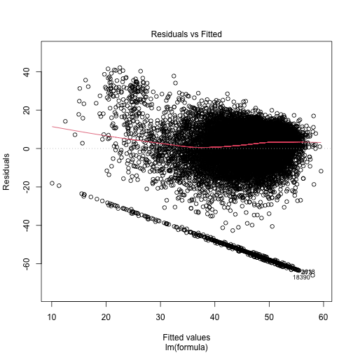
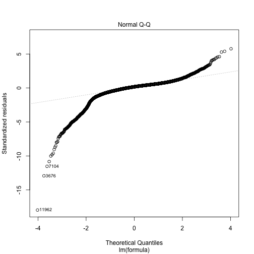
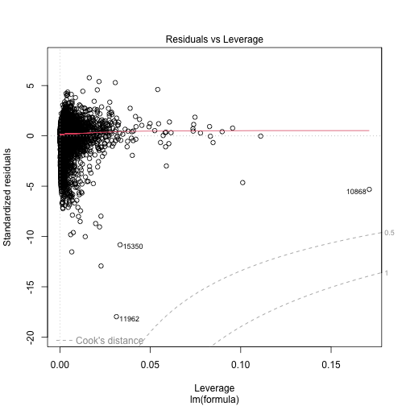

Mental Well-Being
Mental Well-Being
Introductory fluff. Why do we need this module? test reference (Nelson 1987).
Methods
What methods are used? Justification due to output data type. explanation of model output.
 ### Data
### Data
What variables are included? Why is this output chosen. What explanatory variables are used and why are they chosen
Results
What are the results. Coefficients tables. diagnostic plots. measures of goodness of fit.

plot of chunk housing_output
##
## Call:
## lm(formula = formula, data = data, weights = weight)
##
## Weighted Residuals:
## Min 1Q Median 3Q Max
## -11922.1 -50.5 0.0 257.2 3860.5
##
## Coefficients:
## Estimate Std. Error t value Pr(>|t|)
## (Intercept) 34.298898 1.683824 20.370 < 2e-16 ***
## factor(sex)Male 0.581192 0.215393 2.698 0.006977 **
## factor(ethnicity)BLA 5.697763 1.603943 3.552 0.000383 ***
## factor(ethnicity)BLC 3.036485 1.803332 1.684 0.092235 .
## factor(ethnicity)CHI 1.729325 2.146717 0.806 0.420504
## factor(ethnicity)IND 2.462777 1.504434 1.637 0.101646
## factor(ethnicity)MIX 2.074729 1.582450 1.311 0.189846
## factor(ethnicity)OAS 4.768816 1.638880 2.910 0.003621 **
## factor(ethnicity)OBL 6.383625 4.042429 1.579 0.114319
## factor(ethnicity)OTH 4.298191 2.109843 2.037 0.041644 *
## factor(ethnicity)PAK 2.372117 1.589841 1.492 0.135705
## factor(ethnicity)WBI 2.586571 1.370180 1.888 0.059075 .
## factor(ethnicity)WHO 1.354800 1.426271 0.950 0.342182
## age 0.108281 0.009115 11.880 < 2e-16 ***
## factor(education_state)1 -0.627273 0.815153 -0.770 0.441598
## factor(education_state)2 0.236072 0.290368 0.813 0.416224
## factor(education_state)3 0.495338 0.384683 1.288 0.197884
## factor(education_state)5 1.115378 0.415749 2.683 0.007308 **
## factor(education_state)6 0.351401 0.327533 1.073 0.283345
## factor(education_state)7 0.712285 0.381529 1.867 0.061929 .
## factor(labour_state)Family Care 0.304963 0.811348 0.376 0.707017
## factor(labour_state)Maternity Leave -2.542077 1.243554 -2.044 0.040949 *
## factor(labour_state)PT Employed -0.605587 0.372088 -1.628 0.103641
## factor(labour_state)Retired 0.261656 0.675626 0.387 0.698554
## factor(labour_state)Self-employed 0.212515 0.580460 0.366 0.714284
## factor(labour_state)Sick/Disabled -7.159909 0.789389 -9.070 < 2e-16 ***
## factor(labour_state)Student 0.879400 0.632180 1.391 0.164225
## factor(labour_state)Unemployed 1.165021 0.773379 1.506 0.131982
## factor(job_sec)1 2.719316 0.843895 3.222 0.001274 **
## factor(job_sec)2 0.904606 0.722854 1.251 0.210792
## factor(job_sec)3 1.958368 0.616340 3.177 0.001489 **
## factor(job_sec)4 1.907603 0.660486 2.888 0.003880 **
## factor(job_sec)5 0.900035 0.816015 1.103 0.270058
## factor(job_sec)6 4.060494 0.748712 5.423 5.93e-08 ***
## factor(job_sec)7 1.553039 0.620380 2.503 0.012311 *
## factor(job_sec)8 1.900414 0.698805 2.720 0.006544 **
## scale(hh_income) 0.401456 0.101844 3.942 8.12e-05 ***
## scale(SF_12) 6.421115 0.134206 47.845 < 2e-16 ***
## factor(housing_quality)2 0.812148 0.694038 1.170 0.241946
## factor(housing_quality)3 1.646733 0.707482 2.328 0.019945 *
## ---
## Signif. codes: 0 '***' 0.001 '**' 0.01 '*' 0.05 '.' 0.1 ' ' 1
##
## Residual standard error: 674.1 on 17123 degrees of freedom
## Multiple R-squared: 0.1889, Adjusted R-squared: 0.187
## F-statistic: 102.2 on 39 and 17123 DF, p-value: < 2.2e-16

References
Nelson, Edward. 1987. Radically Elementary Probability Theory. Princeton University Press.